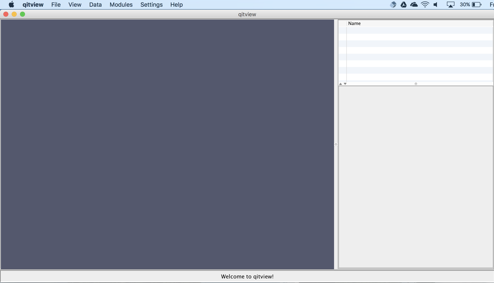
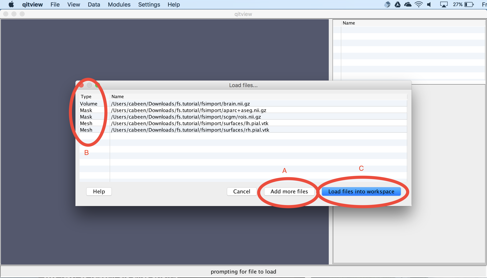
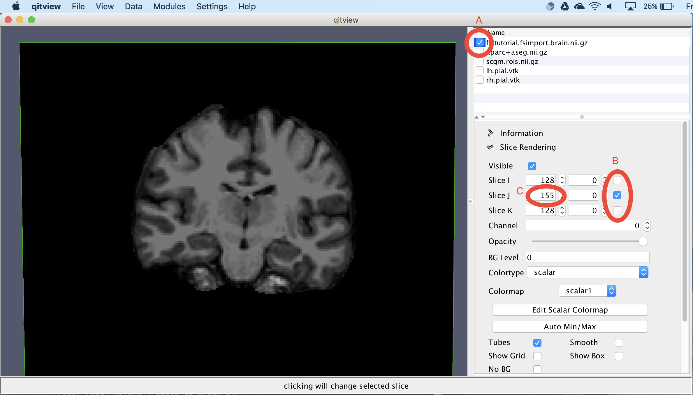
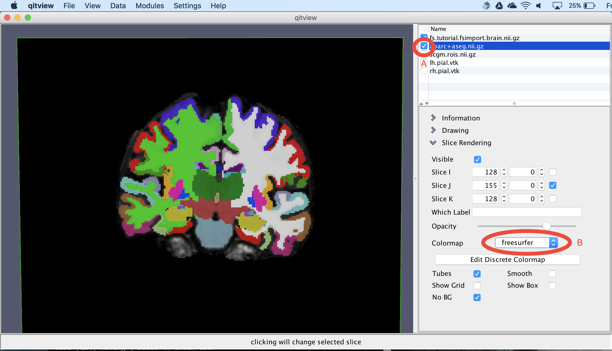
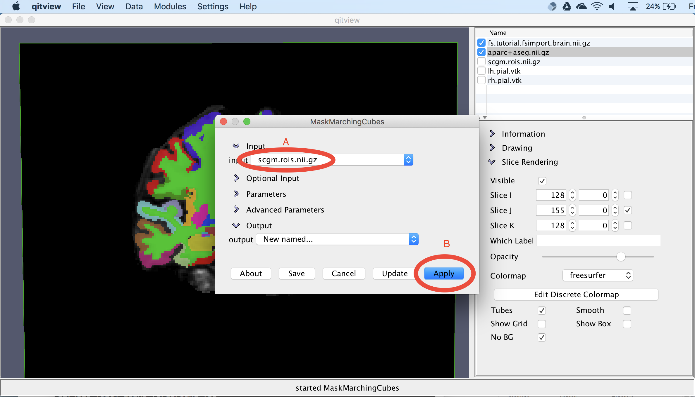
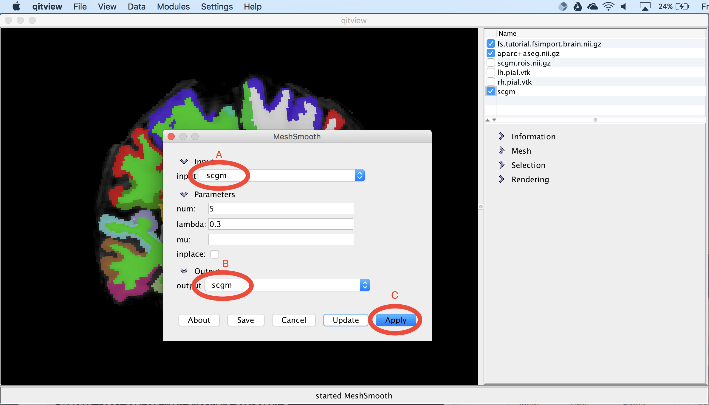
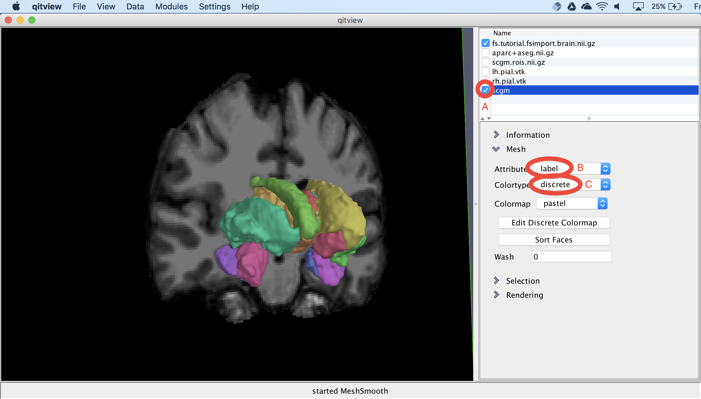
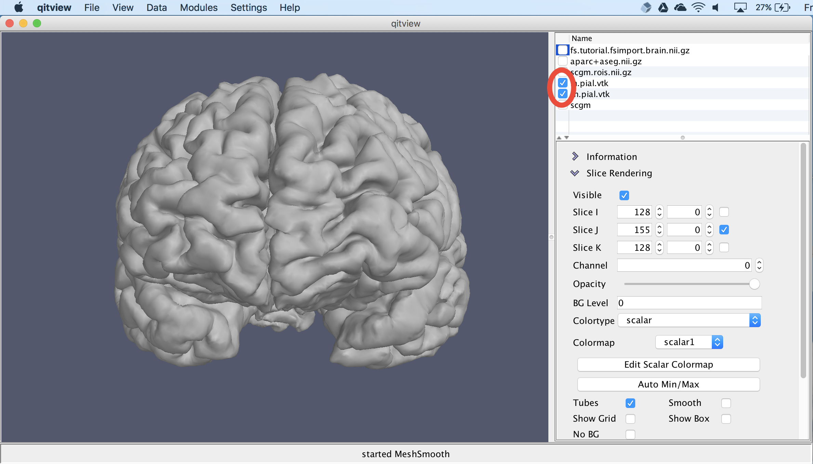
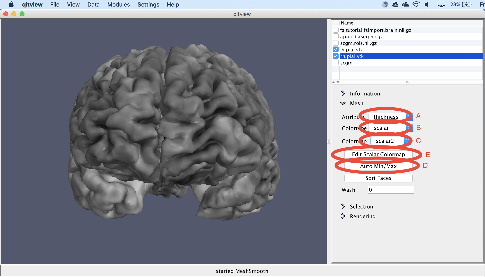
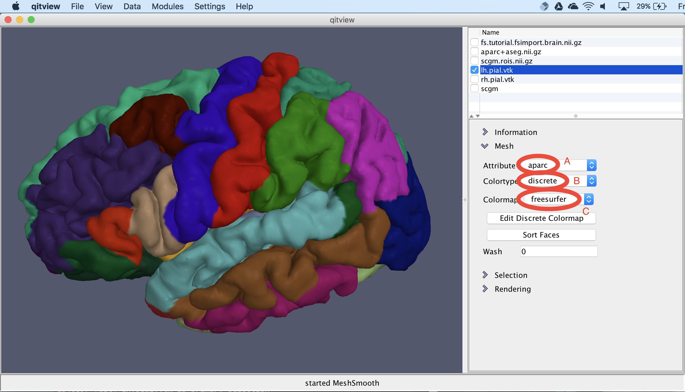

Exploring Freesurfer data with QIT
This page provides a tutorial for visualizing [https://surfer.nmr.mgh.harvard.edu/ FreeSurfer] results with QIT. You’ll learn how to visualize volumetric segmentations of T1 MR images and visualize surface models of cortical and subcortical structures.
Setup
Before starting the tutorial, you’ll need a few things. First, we will make sure you have the necessary dependencies; then, we will download and install QIT; finally, we will download the sample data.
Installation
First, make sure you’ve installed QIT and its dependencies by following the [[Installation]] instructions. You won’t need the advanced dependencies for this tutorial, so you can skip that.
Downloading the sample dataset
Next, we’ll download the sample dataset, which is available here:
 http://cabeen.io/download/fs.tutorial.zip
http://cabeen.io/download/fs.tutorial.zip
After you decompress the archive, you should find these directories:
freesurfer: the subject directory produced by FreeSurferfsimport: the FreeSurfer data imported to a QIT-compatible format
There are other files in the archive, but the ones above are strictly required for the tutorial. This dataset was processed from a 1mm isotropic MPRAGE T1-weighted MRI acquired on a 1.5T scanner. The dataset is described in more detail here
Optional: Converting FreeSurfer results
FreeSurfer uses its own file formats, and to visualize the results in QIT, you have to import them to more general purpose file formats. To simplify the tutorial, we have already done this for you and saved the results to fsimport. However, if you want to visualize other datasets, you will have to similarly import that data using a command like this:
qit FreesurferImport --input freesurfer --brain --segmentations --surfaces --output fsimport
This program assumes you’ve installed FreeSurfer on your machine and put the binaries on the path, like described in the advanced section of the [[Installation]] page.
Tutorial
Now that we have installed QIT and downloaded the sample data, we’ll go over how to visualize the volumetric and geometric models produced by FreeSurfer.
Starting QIT
First, we’ll start qitview. You can do this by running qitview or qitview.pyby either double clicking in your file explorer or executing them on the command line . Once you’ve started the program, you should see console messages about the progress and a window that looks like the image below. There are three sections to the viewer:
- Data Stage: the panel on the left, where data is visualized
- Data Workspace: the panel on the top right, where a list of loaded data is shown
- Data Controls: the panel on the bottom right, where you control how the selected data is visualized

File loader
Next, we’ll open the file loader. You can find the file loader by clicking the File menu and then clicking “Load Files…”. Next, we’ll load the sample data for the tutorial. The file loader lets you open a list of files in batch mode. You can add files to the list by clicking the Add more files button (A) and selecting the file in the file chooser. Each entry in the list displays the file type and file name. You should add these files to the list:
fsimport/brain.nii.gzset to datatype Volumefsimport/aparc+aseg.nii.gzset to datatype Maskfsimport/scgm/rois.nii.gzset to datatype Maskfsimport/surfaces/lh.pial.vtkset to datatype Meshfsimport/surfaces/rh.pial.vtkset to datatype Mesh
After that, you need to set the file types to the types listed above (B). Then, you can load the files by clicking Load files into workspace (C):

View the T1-weighted MRI
Next, we will visualize the input T1-weighted MRI dataset. First, click the box next to brain.nii.gz (A). Next, we will isolate a coronal slice by first unchecking the Slice I and Slice K checkboxes (B) and then changing the Slice J index to 155 (C):

View the volumetric segmentation
Next, we’ll visualize the volumetric segmentation. First, you should select aparc+aseg.nii.gz and click the box next to it. Next, you should change the colormap to freesurfer. Now you should see an overlay segmentation on the T1 image:

Extract subcortical surfaces
Next, we’ll visualize the subcortical structures. First, you should select scgm.rois.nii.gz and click the box next to it. Then, you should open the module MaskMarchingCubes. You should set the input to scgm.rois.nii.gz (A) and select the Apply button (B). The module will then ask you for a name for the new mesh object, which you can call scgm:

Smooth the subcortical surfaces
The surface models created by the previous step are jagged due to aliasing, so next, we’ll smooth surface to reduce the discretization effects. First, you should open the model MeshSmooth. You should ensure the input is scgm (A) and then set the output to scgm. This will replace the original scgm with the new smoothed version. Then select the Apply button to run the module (C):

View the subcortical surfaces
Next, we will visualize the surface models of the subcortical structures. First, you should select the scgm object and select the box next to the name (A). This needs some color to distinguish the different structures, so we can change the Attribute to label (B) and then change the Colormap to discrete (C). This should now show meshes with distinct colors for each structure:

View the cortical surface
Next, we will visualize the cortical surface. First, you should hide the other objects by unchecking their visibility boxes. Then, you should check the boxes next to lh.pial.vtk and rh.pial.vtk.. This should show the two hemispheres:

View cortical thickness
Next, we will visualize cortical thickness on the surface. First, you should change the Attribute to thickness (A), then change the Colortype to scalar (B), and then change the Colormap to scalar2 . We need to change the scalar colormap because the T1 MRI is being visualized using scalar1. Next, you should select the Auto Min/Max button to adjust the colormap range to match the cortical thickness values. Currently, it’s showing grayscale, so you should select the Edit Scalar Colormap to pick something else (E):

Change the cortical thickness coloring
Now, you should see a colormap editor window. You should first change the Name to scalar2 (A) and then change the Colormap to diverging (B). You can also experiment with other colormaps besides that one. Then, to apply the colormap, you should select the Apply button (C):

View the cortical parcellation
Finally, we will view the cortical parcellation from the Desikan-Killiany atlas. You should first make sure the lh.pial.vtk object is selected. Then, you should change the Attribute to aparc (A), and change the Colortype to discrete (B), and then change the Colormap to freesurfer. You should then see regions visualized on the cortical surface:

Extract statistics (Optional)
You can also use QIT to extract statistical tables from a FreeSurfer subject directory:
$ qfsmeas freesurfer fsmap
The output directory fsmap will contain a number of CSV files storing morphometric variables for a variety of cortical, white matter, and subcortical structures. These are a bit more friendly for loading data into R, etc. than what FreeSurfer provides by default. For example:
$ ls fsmap
BA.area.csv aparc.a2009s.volume.csv
BA.meancurv.csv aparc.area.csv
BA.thickness.csv aparc.meancurv.csv
BA.volume.csv aparc.thickness.csv
aparc.a2009s.area.csv aparc.volume.csv
aparc.a2009s.meancurv.csv aseg.stats.csv
aparc.a2009s.thickness.csv wmparc.stats.csv
$ head fsmap/aseg.stats.csv
name,value
Left-Lateral-Ventricle,4355
Left-Inf-Lat-Vent,289
Left-Cerebellum-White-Matter,12850
Left-Cerebellum-Cortex,42203
Left-Thalamus-Proper,6235
Left-Caudate,3086
Left-Putamen,5655
Left-Pallidum,1594
3rd-Ventricle,677
Conclusion
Congratulations! You’ve completed the tutorial for visualizing FreeSurfer results. Feel free to experiment with other surface attributes and settings in qitview or ask around if you’d like to know more about what else you can do.